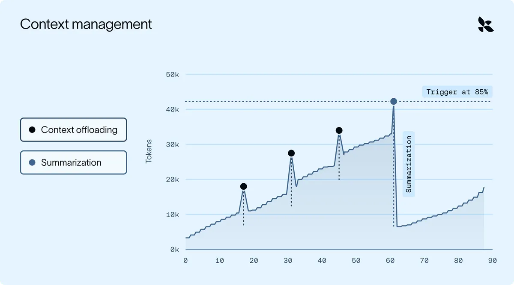
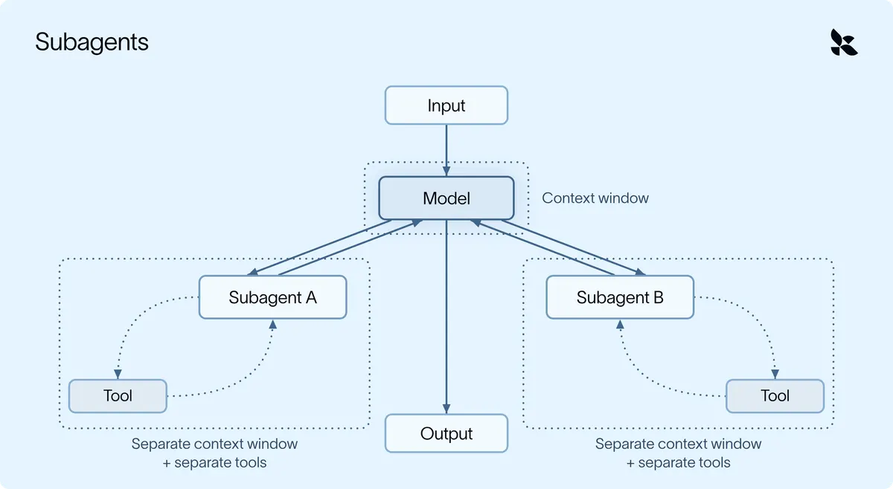

上下文腐化：五種機制把資訊搬出視窗，再按需取回
導讀原文：LangChain Blog〈Context Engineering with Deep Agents: How To Remember Without Keeping Everything In Context〉——方法論文章，以每週一跑的競爭分析 agent 貫穿舉例
模型背得愈多，推理愈鈍——原文稱此為 context rot。檢索管「進得來」，這篇管「已經在裡面的」。

原文把手法先分兩類：不讓無用資訊進視窗，以及管理已經進來的。前者是檢索與卸載，後者是摘要與過濾（編輯歸納）。
病徵寫得很直接：模型帶的歷史、噪音與工具輸出愈多，準確度與推理通常愈差。原文用考前抱佛腳比喻——讀得愈多，前面幾章反而先滑掉。
五種機制，各自掛在迴圈的哪一點
agent 就是「模型加一圈 harness」。原文的實作方式是 middleware：程式掛進迴圈的特定時點（開跑前、每次模型呼叫、每次工具呼叫），讀 context、改 context，再讓下一步跑。
| 機制 | 做什麼 | 掛鉤點（何時跑） |
|---|---|---|
| 卸載 | 工具結果超過約 2 萬 token 就寫進 /large_tool_results/{tool_call_id}，模型只看首尾幾行＋路徑 | FilesystemMiddleware，每次工具呼叫、進對話之前 |
| 摘要 | 用量到 85%（預設）時把舊訊息壓成一份摘要，最近訊息逐字保留、排在摘要之後 | SummarizationMiddleware，每次模型呼叫前查用量 |
| Skill | 平時只讀每份 SKILL.md 的標頭，模型判斷相關才載入全文 | SkillsMiddleware，開跑前掃資料夾、每次模型呼叫注入名稱與描述 |
| 子代理 | 確定會很吵的工作丟到另一個 context window，只回結果 | SubAgentMiddleware，任務派進獨立視窗，可另配 system prompt 與工具 |
| 長期記憶 | 學到的偏好寫進一份 markdown，跨對話沿用 | MemoryMiddleware，開跑時讀檔、每次呼叫注入、學到新事時更新 |
→ 可橫向滑動
原文補一句：大部分行為內建，不寫 middleware 也能用；要客製門檻或提示詞才需要自己掛。
五種不是替代關係（編輯歸納）：卸載管單次尖峰，摘要管總量，skill 管知識，子代理管噪音，長期記憶管跨對話。
skill 是一個資料夾，內含指示，可選腳本與參考文件。原文的例子是每季才用一次的 QBR 報告格式：放進 system prompt，等於每次呼叫都付 token 與回應時間。
範例的 pull_market_report 每次回整份匯出（數千列），模型卻只要其中幾個數字——正是卸載要解的場景。
範例 agent 每週一研究五家對手。到第四步動筆時，它已經帶著五份原始匯出、數十筆搜尋結果與兩份過時草稿跑每一輪模型呼叫。
子代理與摘要：兩個容易做錯的細節

原文建議子代理只回結論：範例的 market-researcher 讀完整份報告，只回三個要點，主代理連原始報告的預覽都看不到。子代理任務通常小且界線清楚，因此可跑較便宜的模型，也能平行。
摘要有兩個容易漏的性質。一是可回收：被摘要掉的訊息寫進 /conversation_history/{session_id}.md，需要細節時讀得回來。二是會循環：用量再爬升，下一次摘要會把前一次摘要一起吃進去。
同一套邏輯也用在長訊息：貼上的長逐字稿超過 5 萬 token 就卸載到 /conversation_history/，處理方式與工具結果一樣。
原文的策略第一條是：大輸入該卸載、不該截斷。截斷是有損的，卸載之後還查得回來。
原文在檢索那篇說管理 context 只是半套；這篇補上另一半——決定什麼進得來，與進來之後怎麼不塞爆（編輯歸納）。
長期記憶則解決重複交代：每週都要講一次「摘要用項目符號、不要段落」。寫進記憶檔後不必再講；記憶是自有儲存裡的純檔案，換模型、換供應商都能沿用。
（編輯觀點：原文稱記憶是自有儲存裡的純檔案、換供應商可沿用，是設計主張而非已驗證成效；摘要後準確度回升這點，原文同樣未給實測數字。）
帶走三件事
卸載與摘要治不同的病。尖峰靠搬檔案，緩坡靠重設。
摘要必須可回收。壓掉的內容要留檔，否則細節永久消失。
噪音工作該隔離，不該壓縮。壓縮已發生的事，隔離讓它不發生。
同一主題的其他館藏
導讀為本站編輯內容（AI 摘解自原文與館藏重點，非官方文件）；引述數據出自原文，圖解與小標為編輯整理。內容經對照原文的獨立事實審查後發布。